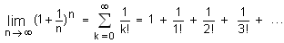
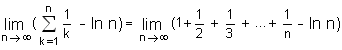

Leonhard Euler (15.4.1707 - 18.9.1783, St.Petersburg)
Euler vollendete 1726 sein Studium in Basel. Seine Laufbahn begann 1727 im Todesjahr Newtons mit der Berufung nach St. Petersburg. Descartes hatte seine "Geometrie" vor 90 Jahren veröffentlicht. Die Universitäten beschäftigten sich im 18.Jahrhundert grösstenteils mit Elementarunterricht. Die Mathematik galt wegen ihres Ursprunges in der Antike als ehrenhaft, doch die wesentlich jüngere Physik war noch nicht anerkannt. So blieben die königlichen Akademien als Platz für die Forschungsarbeit. 1741 ging Euler an die Akademie in Berlin und kehrte 1766 nach St. Petersburg zurück. Friedrich der Grosse und Katharina von Russland in Berlin und St.Petersburg boten Euler die materiellen Voraussetzungen für seine Arbeiten. Russland verzichtete nie völlig auf Euler. Noch während seiner letzten Jahre in Berlin bezahlte man ihm einen Teil seines Gehaltes weiter.
Akademien von damals waren Forschungsstätten, die ihre führenden Mitglieder dafür bezahlten, dass sie wissenschaftliche Arbeiten leisteten. Die Gehälter waren so grosszügig, dass eine Familie bequem davon leben konnte.
Euler schrieb die schwierigsten mathematischen Probleme mit unglaublicher Leichtigkeit nieder. "Er rechnete so mühelos, wie andere Menschen atmen oder der Adler in den Lüften schwebt". Eulers Zeitgenossen nannten ihn die "fleischgewordene Analysis". Sogar die zunehmende Blindheit (vollständige Erblindung 1771) hemmte in keiner Weise seine unvergleichliche Produktivität, entstand doch fast die Hälfte seines Lebenswerks in der zweiten Petersburger Zeit
Euler verwendete die Infinitesimalrechnung in der Mechanik, wodurch für diese grundlegende Wissenschaft die Neuzeit begann. Sein überragendstes Werk ist aber jenes über die Variationsrechnung (1744), wo es im weitesten Sinn um Optimierungsprobleme geht.
1742 erhält Euler einen Brief von Goldbach, indem Goldbach eine zahlentheoretische Vermutung aufstellt, die später als sog. 'Goldbachsche Vermutung' berühmt wird.
In der Serie 1976 bis 1995 war Leonhard Euler auf der Schweizer 10-Franken-Note abgebildet.
Nach Euler benannt sind die beiden folgenden wichtigen Zahlen:
e = 
e ≈ 2.718281828459045...
Die Eulersche Zahl e (Basis der natürlichen Logarithmen) ist nicht zu verwechseln mit der Eulerschen
Konstanten C:
C = 
C ≈ 0.5772156649...